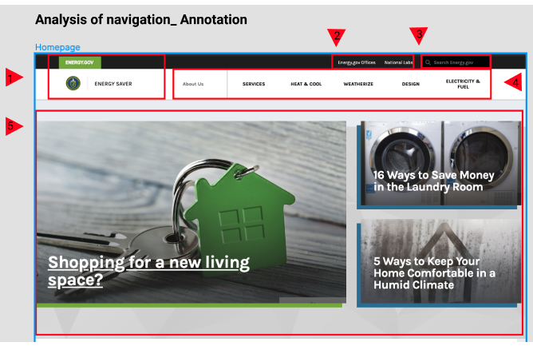

Work Process

1. Usability Testing
A. To understand the paths navigated by the user to reach out the information. B. To oberve how the user interprets the navigations on the website and analyze how ease those navigations are.

2. Site-Map Construction
Reorganize Primary and Secondary navigations

3. Iterations over testings
Creating simple and well catergorized primary/Secondary navigations